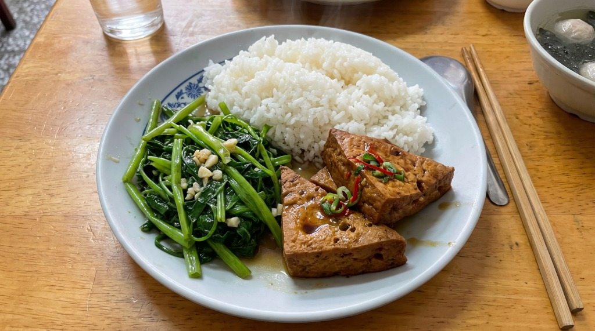

高齡者日常餐食辨識與家庭飲食支持系統
主要 Persona (長者端) 林陳桂華 女士
次要 Persona (家屬端) 林正義 先生
12:00
5G ●●● 100%
< 返回上一頁
呷好食光
呷好食光
您的飲食紀錄與交流助手
登入帳號
使用Google登入
使用臉書登入
使用LINE登入
第一次使用嗎? 請先點擊下方註冊帳號
立即註冊
呷好食光
使用Google註冊
使用臉書註冊
使用LINE註冊
< 返回上一頁
拍攝餐食
餐食日記
聊天室
拍攝畫面

尚未經您確認
您吃的是這些嗎?
滷肉、青菜、白飯
是的，下一步
菜色辨識失敗了嗎? 請選擇：
重新拍攝
語音修正
菜色與份量確認
修正後菜色：豆腐、青菜、白飯
實際吃了多少？
半碗飯 / 可修改
豆腐是煎的還是蒸的？
語音回答
不知道／略過
確認菜色與份量
來源與說明
已確認：豆腐、半碗飯
仍未知：用油量、醬汁配方
系統依確認資訊查詢資料
資訊不足，無法估算鈉含量
查看資料來源與估算依據
選用哪個資料庫項目、份量假設、來源日期；未知油量、醬汁列出。
一般資訊與建議
可詢問醬料是否能另放
是否採用由你決定
下一步
這筆紀錄要如何處理？
保留於私人帳號
預覽後分享
刪除紀錄
私人紀錄不會提供其他用戶查看
刪除前再次確認
接收者：家人 A
變更分享對象
分享內容：餐食照片與文字
已確認：豆腐、半碗飯
仍未知：用油量、醬汁配方
確認後才提供對方查看
確認分享
返回修改
取消分享
餐食日記
11/10
豆腐、青菜、白飯
詳細資料
11/9
豆腐、青菜、白飯
詳細資料
11/5
豆腐、青菜、白飯
詳細資料
11/4
豆腐、青菜、白飯
詳細資料
11/10 詳細資料
餐食菜色與份量確認
已確認：豆腐、青菜、白飯
實際吃了多少？半碗飯
豆腐是煎的還是蒸的？蒸的
仍未知：用油量、醬汁配方
來源與說明
系統依確認資訊查詢資料
資訊不足，無法估算鈉含量
選用哪個資料庫項目、份量假設、來源日期；未知油量、醬汁列出。
一般資訊與建議
可詢問醬料是否能另放
是否採用由你決定
< 返回餐食日記
聊天室
家人A
家人A
>
家人B
家人B
>
家人C
家人C
>
AI
AI助手
>
家人端｜收到分享後
分享內容：餐食照片與文字
已確認：豆腐、半碗飯
仍未知：用油量、醬汁配方
不要再淋醬了
直接回覆
請ai協助潤飾語氣
呷好食光
拍攝餐食
餐食日記
聊天室
家人回應
家人端｜收到分享後
原文：不要再淋醬了
AI 協助修改語氣
草稿：這餐要不要試試少加一點醬？
保留原意，可修改或不用草稿
訊息尚未送出
使用草稿
保留原文
確認送出
取消
介面內容為示例；AI 改寫由發話者本人確認後送出。